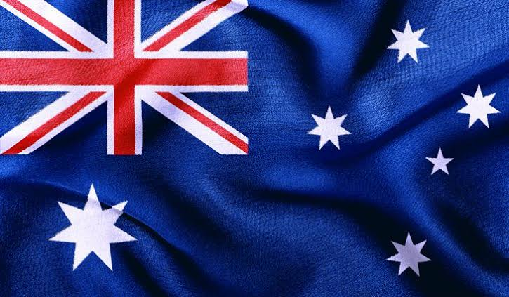

Australia es un país rodeado por los océanos Índico y Pacífico. Sus ciudades principales (Sídney, Brisbane, Melbourne, Perth y Adelaida) son costeras. Su capital, Canberra, se encuentra en el interior. El país es conocido por la Casa de la Ópera de Sídney, la Gran Barrera de Coral, una vasta área natural desértica conocida como Outback y especies animales únicas, como el canguro y el ornitorrinco.

CARACTERISTICAS
Capital: Canberra, aunque Sídney y Melbourne son las ciudades más grandes y conocidas.
Idioma: Inglés es el idioma oficial.
Moneda: Dólar australiano (AUD).
Geografía: Continentepais, famoso por sus playas, desiertos y la Gran Barrera de Coral.
Flora y fauna: Hogar de animales únicos como canguros, koalas y delfines.
Economía: Fuerte en minería, agricultura, turismo y tecnología.
Gobierno: Monarquía constitucional con una democracia parlamentaria.
Clima: Varía desde tropical en el norte hasta templado en el sur, con climas desérticos en el centro.
Educación: Sistema educativo de alta calidad, con universidades reconocidas como la Trinity College.
Turismo: Atrae turistas por sus paisajes naturales, su historia medieval y monumentos icónicos como el Castillo de Dublín y los Acantilados de Moher.